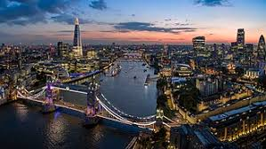

מסע בין חמישה מקומות מדהימים בעולם
פרטי המקום
אטרקציות מומלצות
|
לונדון – עיר שלא נשכח לונדון היא אחת הערים המרתקות ביותר שביקרתי בהן. היא מציעה שילוב ייחודי של היסטוריה עשירה ותרבות מגוונת לצד אורח חיים מודרני ותוסס. הרחובות שלה מלאים בבתי קפה, גלריות אמנות, שווקים צבעוניים ובניינים מפוארים שמספרים את סיפורה של אימפריה ענקית. בביקורי שם חוויתי את הטקסים הפורמליים ליד ארמון בקינגהאם, טיילתי לאורך נהר התמזה, ובאמת הרגשתי שאני הולך בין דפי ספר היסטוריה. ממליץ בחום לבקר שם לפחות פעם אחת בחיים! אל תשכחו לבקר ב-Tower Bridge בסמוך לשקיעה – הנוף פשוט עוצר נשימה. |